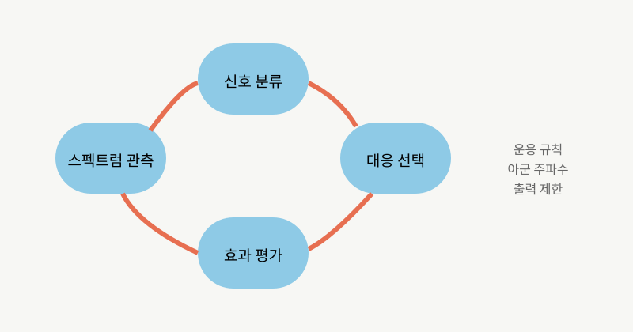

NOTE 10 · ELECTRONIC WARFARE
인지 전자전 시스템의 동작 방식
전통적인 전자전 장비는 위협 신호의 특징과 대응 방식을 라이브러리에 넣어둔다. 어떤 레이더가 어느 주파수와 펄스 패턴을 쓰는지 알면 빠르고 안정적으로 대응할 수 있다. 반대로 처음 보는 파형이나 현장에서 바뀐 신호를 만나면 분석하고 목록을 갱신하는 데 시간이 걸린다.

인지 전자전은 이 간격을 줄이려 한다. 넓은 스펙트럼을 감시하고, 신호의 반복과 변화를 분류하며, 제한된 시간 안에 효과가 있을 법한 방해 방식을 선택한다. 중요한 건 ‘AI가 알아서 싸운다’는 표현보다 관측-분류-대응-평가의 주기를 장비 안에서 얼마나 짧게 닫느냐다.
수신부는 주파수, 대역폭, 펄스폭, 반복주기, 도래각과 변조 특징을 측정한다. 서로 겹친 신호를 분리하고 같은 송신원에서 나온 펄스를 묶은 뒤 위협 종류와 우선순위를 추정한다. 대응부는 잡음 재밍, 기만 신호, 통신 링크 차단 등 가능한 수단 가운데 임무 규칙에 맞는 방식을 고른다.
우크라이나 전장에서는 드론이 사용하는 주파수가 재밍을 피해 계속 옮겨가고, 상대는 다시 탐지기와 재머를 업데이트한다. RUSI와 미 육군 자료가 묘사하는 전자전은 완성품끼리의 대결보다 소프트웨어와 주파수 표가 빠르게 바뀌는 운영 경쟁에 가깝다.
효과 평가는 별도 단계다. 방해를 시작한 뒤 상대 신호의 추적 상태나 통신 품질이 실제로 변했는지 확인해야 한다. 결과가 부족하면 파형과 출력, 방향을 바꾼다. 이 피드백 과정이 없으면 자동 분류가 빨라도 전력만 소비하거나 위치를 노출할 수 있다.
자동화의 위험도 분명하다. 복잡한 전파 환경에서 아군 신호를 적으로 오인하면 통신과 항법을 스스로 방해한다. 훈련 데이터에 없던 신호를 과도하게 확신할 수도 있다. 운용 체계에는 신뢰도 표시, 금지 주파수, 출력 제한, 사람의 승인 조건과 사후 분석용 로그가 필요하다.